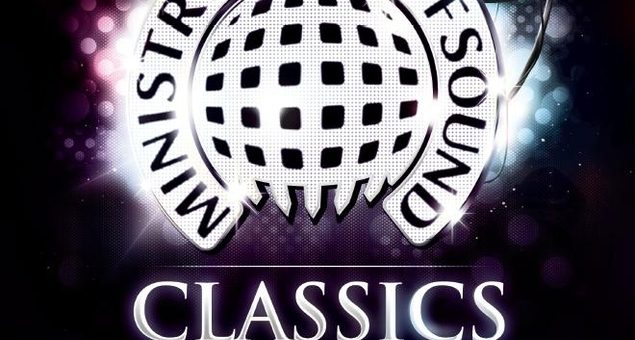

Ministry of Sound Classics comes to Ivy on NYD


More and more dance music events are taking advantage of the opulent surrounds of Ivy, and on New Years Day we’ll see another renowned brand setting up shop. Ministry of Sound Classics will be holding sway on January 1st 2010. Some of Australia’s most iconic DJs will be laying down the classic tunes stretching all the way back to the early 90s, including Mark Dynamix, Groove Terminator, Phil Smart and Alex Tayor, as well as Kid Kenobi playing a classic breaks set.
Ministry of Sound Classics events have sold out at their old home of the Greenwood for the past four years in a row, so it’s bound to go down a treat in the new venue and offer an ‘anthemic’ way to kick off the New Year.
Ministry of Sound Classics comes to Ivy on January 1st 2010. Tickets on sale now at ITM, check out the full lineup below:
Kid Kenobi
Bagraiders
John Course
Mark Dynamix
Groove Terminator
Phil Smart
Sugar Ray
Simon Caldwell
John Devecchis
Alex Taylor
Shamus
Trent Rackus